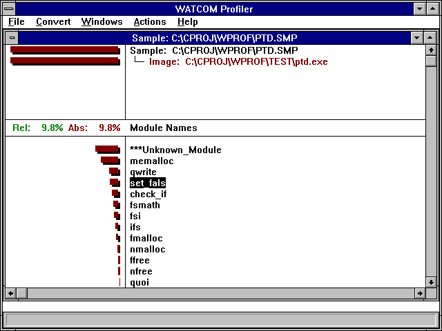
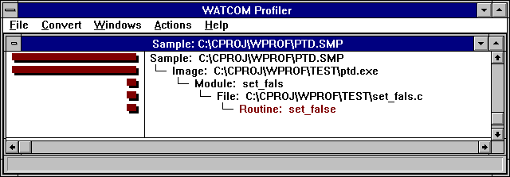
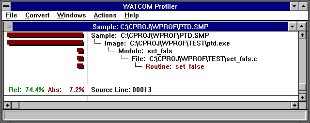
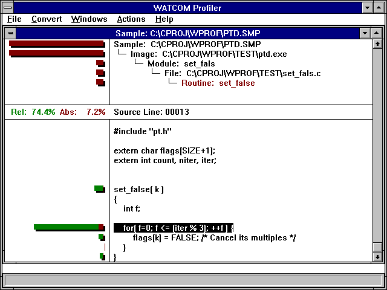
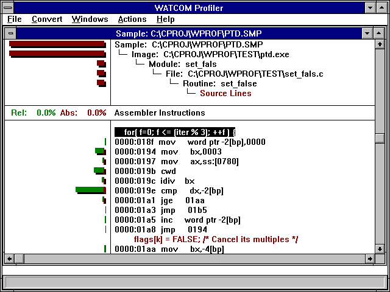
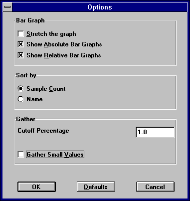
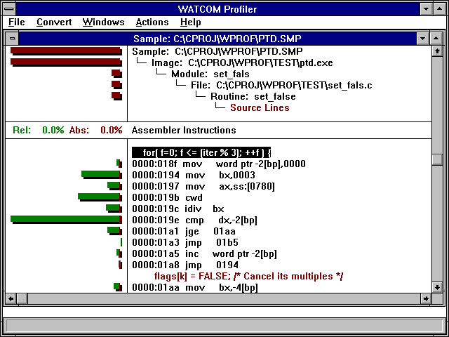
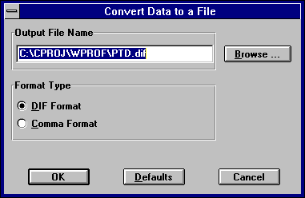

Index of Topics
- - A -
- Absolute and Relative Percentages
The Actions Menu
- C -
- The Convert Dialog
The Convert Menu
- D -
- The Detail View
- F -
- The File Menu
- H -
- The Help Menu
How to Use the Profiler Effectively
- I -
- The Information Area
- O -
- The Open Watcom Execution Profiler
Open Watcom Execution Profiler Command Line Format
The Open Watcom Execution Profiler User Interface
The Open Watcom Execution Sampler
The Options Dialog
- P -
- The Popup Menu
Profile Analysis Tools
The Profiler Menu Bar
Profiling a NetWare NLM
- S -
- Sampler Command Line Options
Sampler Operating System Considerations
Sampler Options Summary
Samples
The Status Line
- T -
- The Title Area
- U -
- Using the Sampler with DOS
Using the Sampler with DOS/4GW or DOS/4G
Using the Sampler with NetWare 386
Using the Sampler with OS/2
Using the Sampler with the Phar Lap 386|DOS-Extender
Using the Sampler with Win32
Using the Sampler with Windows 3.x
- W -
- The Windows Menu
- Z -
- Zoom-In and Backout
This section describes how to use the profile analysis tools to enhance the performance of your program. There are
two profile analysis tools:
- The Open Watcom Execution Sampler (the sampler)
- The Open Watcom Execution Profiler (the profiler)
You must use both of these tools to discover where your code is spending time as it executes.
First, you must run the Sampler. The sampler starts your application and, at a predetermined interval,
records the location where your program is executing. This information is saved in a "sample file".
It is a statistical sampling of your program's execution. It is not exact information, but it is accurate enough to
be a very useful tool to enhance your program's performance. See The Open Watcom Execution Sampler.
Second, you run the Profiler. It reads the sample file and displays the sample information graphically.
You can use the profiler to examine the sample data and narrow in on the places where your program spends large amounts
of time. See The Open Watcom Execution Profiler.
Once you have discovered heavily executed portions of your program, you might want to rewrite then using a faster
algorithm or fine tune your implementation of the current algorithms.
- Note
- You must compile and link the program with debugging information. Use at least the d1 option when compiling and
the debug all option when linking.
The Open Watcom Execution Sampler
To run the sampler from the Integrated Development Environment, click on the toolbar item that looks like a stopwatch.
The sampler's command line syntax is shown below.
WSAMPLE [options] program [arguments]
- WSAMPLE
- is one of several versions of the sampler. See the section entitled Sampler Operating System Considerations
for a description of how to run the sampler under various environments.
options
- is a list of valid sampler options, each preceded by a slash ("/") or a dash ("-"). Options may
be specified in any order.
program
- is the name of the program to be sampled.
arguments
- is the set of arguments passed to the program. The program behaves just as if it were executed directly from the command
line. If you normally run your program using:
C>program [arguments]
then it may be sampled using the following command:
C>wsample program [arguments]
By default, the output of WSAMPLE is a sample file with the same name as the executable but with an extension of .SMP.
In the above example, it would be called PROGRAM.SMP.
Sampler Options Summary
The sampler has several command line options. A summary of the available options is displayed on the screen by executing
the "WSAMPLE" program appropriate for your system.
C>wsample
Usage: wsample [options] program [program arguments]
Options:
/b=<size> specify the buffer size for samples (default: 63)
/f=<file> specify the output filename for the sample file
/r=<rate> specify the sampling rate
<size> is a number in the range 1 to
63 (default: 63 kb)
<rate> is a number (range 27 to 1000) specifying
the approximate
time
interval (in milliseconds) between samples
(default:
55)
'#' may be used instead of '=' in options (e.g., /b#10)
Sampler Command Line Options
Command line options allow you to control how much the program's execution will be affected by the presence of the sampler.
System specific options are described in detail in subsequent sections. The options that apply to all versions
of the sampler are:
- /r=<sample_rate>
- Specifies the approximate time between execution samples (in milliseconds). The sampler will set up the system so that
the program will be interrupted in intervals of the number of milliseconds specified on the command line. A smaller
number will result in a more accurate sample file. A larger number result in a less accurate sample. If your
program runs for a very short time, you should use the smallest interval possible. The default value is system dependent
and it will be displayed if you enter "WSAMPLE" with no arguments. The following example will sample the
program's execution 200 times per second.
Example:
C>wsample /r=5 program
/b=<buffer_size>
- Specifies the size of the sampler's internal buffer (in kilobytes). The execution of the program will produce many samples
which must be recorded in the sample file. The sampler stores the samples in an internal buffer until the buffer is
filled and must be written to the disk. You may reduce the buffer size if you want to leave more memory for your application
program. You should not make the buffer size so small that the sampler would have to write samples to disk more than
once a second. The default size for the sample buffer is 63K. In the following example, a buffer size of 10K
will be used:
Example:
C>wsample /b=10 program
/f=<fname>
- Specify the name of the sample file. Samples will be written to the specified file. By default, a file with the
same name as the executable and an extension of .SMP is created.
Sampler Operating System Considerations
There is a different version of the sampler to match each operating system. Some systems do not allow the sample
rate to be adjusted. Each sampler will provide information about any unique aspects of its operation when you type
its program name on the command line.
Example:
C>wsample
Here are the Open Watcom Execution Sampler executable names provided.
- Operating System:
- Command:
DOS
- WSAMPLE.EXE
OS/2
- WSAMPLE.EXE
DOS/4GW or DOS/4G
- WSAMPRSI.EXE
386|DOS-Extender
- WSAMPPLS.EXP
Windows 3.x
- WSAMPLEW.EXE
Win32
- WSAMPLE.EXE
NetWare 386
- WSAMPLE.NLM
The sampler for an operating system such as DOS will not operate correctly in an environment that is not strictly DOS
such as a Windows or OS/2 DOS box. The sampler obtains its information about what was executing when a timer interrupt
occurs from the stack. Unlike "real" DOS, the segment/offset on the stack in a protected-mode environment
supporting Virtual DOS Machines does not correspond to the program that was executing at the time of the timer interrupt.
As a result, you must run the sampler in the real operating system environment for which it was designed. The
same is true for Windows applications in a Win-OS/2 session.
Using the Sampler with DOS
The following options are available under DOS. For a further description of options, see Sampler Command Line Options.
Example:
C>wsample [wsample_options] program [arguments]
- /r=<rate>
- Rates from 1ms to 55ms are allowed.
/b=<size>
- Sizes from 1K to 64K are allowed. Since DOS places a limit on the amount of memory available to all programs, you may
need to use the "b" option to reduce the memory requirements of the sampler, leaving more memory for your program.
/f=<file>
- Specify the name of the sample file.
/i=<interrupt>
- specify an interrupt to monitor
This option allows you to assign any samples that occur while a service interrupt is executing to the instruction following
the requesting INT instruction. This will reveal the amount of time code spends "waiting" for interrupt services.
The interrupt number specified is in base 16 (hex) and can be in the range 20 to ff except for the range 34 to 3d which
is reserved for 80x87 emulation.
Example:
C>wsample /i=25 /i=26 program
/d
- disable monitoring of the DOS interrupt
By default, the DOS version of the sampler assigns any samples that occur while a DOS interrupt is executing to the instruction
following the requesting INT 21H instruction. This will reveal the amount of time code spends "waiting" for
DOS to complete a service. This option can be used to disable this assignment of samples so that the total time spent
executing in DOS code may be determined.
Using the Sampler with OS/2
The following options are available under OS/2. For a further description of options, see Sampler Command Line Options.
Example:
C>wsample [wsample_options] program [arguments]
- /r=<rate>
- Rates from 1ms to 1000ms are allowed.
/b=<size>
- Sizes from 1K to 64K are allowed.
/f=<file>
- Specify the name of the sample file.
/s
- start the application in a new session. By default the sampler starts your application in its own session. Use
/s if you application is a PM application, or requires its own session to run.
Using the Sampler with DOS/4GW or DOS/4G
This version of the sampler uses one of DOS/4GW or DOS/4G to run the sampler in 32-bit protected mode. One of DOS4GW.EXE
or DOS4G.EXE must be located in the path specified in DOS4GPATH or PATH. The sampler will, in turn, invoke
the program with any arguments specified on the command line. The following options are available. For a further
description of options, see Sampler Command Line Options.
Example:
C>wsamprsi [wsample_options] program [arguments]
- /b=<size>
- Sizes from 1K to 64K are allowed.
/f=<file>
- Specify the name of the sample file.
Using the Sampler with the Phar Lap 386|DOS-Extender
The sampler must be run using RUN386. RUN386 will run the sampler in 32-bit protected mode which will invoke the
program with any arguments specified on the command line. The following options are available. For a further
description of options, see Sampler Command Line Options.
Example:
C>run386 wsamppls [wsample_options] program [arguments]
- /r=<rate>
- Rates from 1ms to 55ms are allowed.
/b=<size>
- Sizes from 1K to 64K are allowed.
/f=<file>
- Specify the name of the sample file.
Using the Sampler with Windows 3.x
The Windows 3.x sampler (WSAMPLEW.EXE) will sample both 16-bit and 32-bit Windows applications. The sampler will
only run under Windows 3.x 386 enhanced mode. You must also include the "device" specification listed below
in the [386Enh] section of your SYSTEM.INI file.
DEVICE=C:\WATCOM\BINW\WDEBUG.386
When starting the sampler, you will be presented with a window to select the executable and to specify the sampling
rate.
Once you start the sampler, a log window will appear. This will report the state of the sampled program (it
does not in any way interfere with the program as it is running). Once the program terminates, this window will remain.
The sample file will be placed in the same directory as the program you are sampling, and will have the extension .SMP.
A well-behaved Windows application should have very few samples inside the application. Final development of
a Windows application should involve a phase where the application is analyzed so that it does not consume large amounts
of CPU time without yielding to Windows 3.x.
To start the sampler, double-click on the Open Watcom Execution Sampler icon. Enter a command in the prompt
dialogue box.
[wsample_options] program [arguments]
The following options are available under Windows. For a further description of options, see Sampler Command Line Options.
- /r=<rate>
- Rates from 1ms to 1000ms are allowed.
/b=<size>
- Sizes from 1K to 64K are allowed.
/f=<file>
- Specify the name of the sample file.
Using the Sampler with Win32
The Win32 sampler (WSAMPLE.EXE) will only sample Win32 applications such as those that run under Windows 9x or Windows
NT and later operating systems. It cannot be used to sample 16-bit applications. When starting the sampler, you
will be presented with a window to select the executable and to specify the sampling rate.
Once you start the sampler, a log window will appear. This will report the state of the sampled program (it
does not in any way interfere with the program as it is running). Once the program terminates, this window will remain.
The sample file will be placed in the same directory as the program you are sampling, and will have the extension .SMP.
To start the sampler, double-click on the Open Watcom Execution Sampler icon. Enter a command in the prompt
dialogue box.
[wsample_options] program [arguments]
The following options are available under Win32. For a further description of options, see Sampler Command Line Options.
- /r=<rate>
- Rates from 1ms to 1000ms are allowed.
/b=<size>
- Sizes from 1K to 64K are allowed.
/f=<file>
- Specify the name of the sample file.
Using the Sampler with NetWare 386
The sampler is also available for sampling the execution of NetWare Loadable Modules. The sampler (an NLM itself)
will load and execute the program with arguments.
Example:
load wsample [wsample_options] program [arguments]
The following options are available under NetWare:
- /r=<rate>
- Rates from 1ms to 55ms are allowed.
/b=<size>
- Sizes from 1K to 64K are allowed.
/f=<file>
- Specify the name of the sample file.
The Open Watcom Execution Profiler
The profiler reads the information from sample files and displays the results as a graph. Regions of concentrated
activity are visible and may be explored by zooming in to successive levels of detail. See The Open Watcom Execution Sampler.
Zoom-In and Backout
The profiler allows you to zoom-in to successively more detailed views of your program. You may also back-out
of any detail view. The levels of detail available are:
- Sample
- This is a sample file. The profiler can show you information from several sample files at once.
Image
- A sample file may consist of several images. These are your main executable file and any Dynamic Link Libraries (DLL)
or NetWare Loadable Modules (NLM) that your application called while executing.
Modules
- An image may consist of several modules. Each module is a compilation unit. It consists of all the source code
generated by one invocation of the compiler.
Files
- A module may be made up of several files. Your application may contain code that is generated by included files.
Functions
- A file may contain several functions. These are all of the global functions that are defined within that file.
Source Lines
- A function is made up of one or more source lines.
Assembler instructions
- Each source line generates zero or more lines of assembler instructions. It is possible to get clues about expensive
operations from the number of samples found at each instruction. For example, the C statement "i = j + k * l"
will generate a multiply instruction. If you inspected the assembler instructions, you might find that the multiply
instruction took the majority of the time in question.
The process of moving from higher levels to lower levels, say, from "modules" to "functions", is called
zooming in. Moving from lower levels to higher levels ("assembler instructions" to "source lines")
is called backing out. As you zoom into your program the size of the region will get smaller but the amount
of detail will increase. Likewise, backing out will restore previous levels to the larger regions and reduced detail.
You may zoom-in and back-out of detail views in order to explore your applications execution characteristics.
Samples
After you have run the sampler, you are left with a sample file. It contains a record of all locations where your
program was interrupted by the sampler. A sample is a record of the instruction pointer within the program at
the point in time that the interrupt occurred. Regions of the program that consume large amounts of execution time
have a larger number of samples associated with them.
Absolute and Relative Percentages
The most important piece of data that the profiler provides is the percentage of time that a region of code contributes
to total execution time. At the highest level (images), these percentages reflect each image's contribution to the
total execution time. As you successively zoom into modules and functions, you may become interested in the relative
percentages.
The percentage of time that a region contributes to the total program execution time of the program is called
an absolute percentage. The percentage of time that a piece of a region contributes to the total execution time
of your current detail level is called a relative percentage.
As you zoom in to the source and assembly views, the absolute percentages of execution time may get quite small.
The relative percentages help you to get a feel for the proportion of time involved within the detail view, but don't get
fooled into thinking that a routine contributes more than it actually does. Your decisions about which code to optimize
should always be based on absolute percentages.
The Open Watcom Execution Profiler User Interface

Figure 1. The Main Profiler Screen
The profile screen is divided into six areas. In the middle of the screen is the information area.
It contains relative and absolute percentage numbers. The top half of the screen is the title area. The bottom
half of the screen is the detail view. The menu is displayed at the top of the screen. The bottom line displays
status information.
The Title Area

Figure 2. The Profiler Title Area
As you zoom in and back out, the title area adds and removes lines to show you that path that you took to your current
detail view. You can back out to any level displayed in the title area by double clicking on that line.

Figure 3. The Profiler Information Area
The information area is updated as you move around in the detail view. The red and green percentage numbers
give you numerical values that correspond to the histogram bar on the current line in the detail area. The red number
represents the line's percentage of total execution time. The green number represents the line's percentage of the
time spent within the current detail level.
The Detail View

Figure 4. The Profiler Detail View
The detail view shows you a list of one of the following:
- Image Names
- Module Names
- File Names
- Routine Names
- Source Lines
- Assembler Instructions
On the left half of the screen is a histogram which shows the number of samples at each location. On the right is
a list of names. If there are more lines than will fit on the screen, you can use the cursor keys and scroll bars to
move through the list. As you cursor through the list of names, or click on a name with the mouse, the information
area is updated to show statistics about the current line in the detail area.
If you find a line that is heavily executed, and you wish to examine the it in more detail, double click on it, or
cursor to it and press F3 or ENTER. You may back out of a detail view by pressing F4 or BACKSPACE. As you zoom
in and back out, the title area is updated to show that path you took to your current detail area.

Figure 5. The Profiler Assembly Detail
The histogram will be drawn in two colors, red and green. The red portion represents the absolute percentages
of execution time for each line. The green and red portions, taken together, show the percentage of a line relative
to the current detail view. For example, if a detail line represented 10% of the total execution time, then the red
absolute bar would take 10% of the histogram area. If the entire digital view represented 20% of the execution time,
then the single detail line would have a green and red bar which would take 50% of the histogram area (10% is half the total
time of the entire detail view).
The Profiler's menu bar lets you perform operations. You can activate the menu bar by using the mouse, or by holding
the ALT key and pressing the key that corresponds to the highlighted character in the menu bar. There are five menu
bars.
The File menu contains the following items:
- Open...
- Open a new sample file. A new window will be opened, and the data from the sample file will be displayed in it.
Close
- Close the current sample file. The current window will be closed.
Options
- This allows you to set profiler options. See the section entitled The Options Dialog
for details.
System
- Start a new operating system shell. This option is only available in the DOS version of the profiler.
Exit
- Close your profiler session and exit.
The Convert menu allows you to select an output format to save some of the raw information to a file. The DIF format
is supported by most of the major data manipulation or spreadsheet programs. The comma delimited format is a simpler
format that is supported by older software, and is easily manipulated by custom made software. The Convert menu contains
the following items:
- Current Module
- Use this menu item to save out the information related to the current module.
Current Image
- Use this menu item to save out the information related to the current image.
All Images
- Use this menu item to save out the information related to the all of the sample images.
The Windows menu contains one menu item for each sample file you have open. Use this menu to switch between sample
files.
When you select an item from the Actions menu, it acts on the current detail view. To configure one of the actions
across all windows, see The Options Dialog. The Actions menu is identical to the
floating popup associated with the current window. See The Popup Menu. The Actions
menu contains the following items:
- Zoom In (F3)
- Zoom in to the currently selected line. If the line is a source file, you will see a list of functions. If the
line is a function, you will see source lines, and so on. You can also zoom into a line by double clicking on it.
Back Out (F4)
- Back out of the current detail view to the previous view. Double clicking in the title area will also achieve this.
Gather Small Values
- Large portions of your program may be executed very little, if at all. This menu item will cause lines with a smaller
absolute percentage than the cutoff value to be grouped together. They will be displayed on a single line starting
with the text '***Gathered'. To change the cutoff value, see The Options Dialog.
Bar Graph/Stretch
- When looking at areas that are not executed very much, the histogram bars can get very small. This menu item will stretch
the histogram so that the largest bar goes all the way to the left of the screen.
Bar Graph/Absolute Bars
- Use this menu item to turn the absolute (red) histogram bars on and off.
Bar Graph/Relative Bars
- Use this menu item to turn the relative (green) histogram bars on and off.
Sort/Sample Count
- Use this menu item to sort the detail view with the most heavily executed region at the top.
Sort/Name
- Use this menu item to sort the detail view alphabetically by name.
The Help menu item is used to select an action from the help sub-system. All of the profiler documentation is available
in the on-line help.
You can access the pop-up menu for a window by pressing the right mouse button or by typing the period (.) key.
The popup menu item is identical to the Action menu. The Zoom-in menu item will zoom in to the line on which the mouse
was clicked. See The Actions Menu.
The Options Dialog

Figure 6. The Profiler Options Dialog
The options dialog changes profiler settings across all views and windows. The following items can be changed:
- Stretch the Graphs
- When looking at areas that are not executed very much, the histogram bars can get very small. This menu item will stretch
the histogram so that the largest bar goes all the way to the left of the screen.
Show Absolute Bar Graphs
- Check this box to turn the absolute (red) histogram bars on or off.
Show Relative Bar Graphs
- Check this box to turn the relative (green) histogram bars on or off.
Sort By Sample Count
- Check this radio button to sort the detail views with the most heavily executed regions at the top.
Sort By Name
- Check this radio button to sort the detail view alphabetically by name.
Gather Small Values
- Large portions of your program may be executed very little, if at all. This menu item will cause lines with a smaller
absolute percentage than the cutoff value to be grouped together. They will be displayed on a single line starting
with the text '***Gathered'.
Cutoff Percentage
- Specify a new cutoff percentage here. You can specify any value between 0 and 100.

Figure 7. The Bar Graph After the Stretch Option is Selected
The Convert Dialog

Figure 8. The Convert Dialog
After selecting from the Convert menu the portion of the sample information that you wish to convert, a conversion
dialog is presented. The following items may be changed:
- Output File Name
- The name of the sample file with the file extension most commonly used for the conversion type is displayed. You may
change this to any name, or use the Browse button to help select the name.
Format Type
- Check this radio button to specify the data type that the sample information will be converted to.
The Status Line
The status line is located at the bottom of the profiler screen. As you cursor through a menu, or drag the mouse
over a menu, the status line will display hints about what each menu item does.
How to Use the Profiler Effectively
The fundamental principle behind the profiler is: devote your attention to the heavily executed regions of the
program in order to extract the most performance out of a program. This principle can be applied to the different
levels of detail within a program. You should focus on the modules that contribute the most time to the execution of
a program. Within a module, you should focus on the functions that contribute the most time to the module's total execution
time. Regions of the program that exhibit heavy use during the execution of a program will benefit most from improvement.
A simple example will illustrate how this is accomplished. Suppose we have a program that has three distinct
regions.
- Region
- Percentage
1
- 10%
2
- 70%
3
- 20%
The percentages represent the percentage of the total execution time that the region contributed. If the program
took 100 seconds to execute, we could know that regions 1, 2, and 3 took 10, 70, and 20 seconds respectively. Now suppose
we could rewrite region 1 so that it was twice as fast. What would be the impact on the total execution time of the
program? It is difficult to predict precisely but, as a rule of thumb, we would expect that if we made region 1 twice
as fast, it would only take 5% of the original execution time as opposed to the original 10% before optimization. So,
if the original program took 100 seconds to execute, we would expect region 1's contribution of time to drop from 10 seconds
to 5 seconds making the execution time of the new program now 95 seconds. Notice that the region of code was twice
as fast as before but the total effect on the execution of the program was small. The impact of rewriting the code
was reduced because the region did not contribute greatly to the execution time of the original program.
To illustrate the point of using a profiler tool to increase performance, let us now look at the effect on the program
execution speed if we were to recode region 2 so that it was twice as fast as before. Using the previous rule of thumb,
we would expect region 2's contribution to the original execution time to drop from 70% to 35%. Now, if the original
program took 100 seconds to execute, we would have reduced the total execution time to 65 seconds by focusing on region 2.
Comparing these results, we can see that the most benefit was derived from doubling the speed of region 2 as opposed
to doubling the speed of region 1. The change in region 2 reduced the execution time by 35% while the change to region
1 reduced the execution time by 5% for roughly the same amount of work. The large amount of work involved in speeding
up code means that the most productive avenue is to focus on the heavily executed regions of the program.
The formal profiler command line syntax is shown below.
WPROF [options] [sample_file]
The options are:
- -DIP dip_name
- Specify a DIP for use by the profiler. All default DIPs are disabled by the first use of this option. Successive
uses of the option will add to the list of DIPs. The DIPS will used in the order in which they are specified.
-NOCHarremap
- The profiler uses character re-mapping to display many of the graphics characters. When you are running the profiler
in some DOS environments, you may see a number of strange characters on the screen. This is a DOS only option to turn
off character re-mapping.
-NOGrahicsmouse
- This is a DOS only option to turn off the graphics mouse, and to use the block mouse cursor instead.
-? or -Help
- Display command line help.
Profiling a NetWare NLM
The profiler does not run under NetWare. After you have run the sampler under NetWare, you will have to run the
profiler under DOS, OS/2 or Windows. By default, the sample file will be created in the root directory of the file
server. Log into the file server from a workstation and specify the name of the sample file on the server when you
start the profiler. All NLMs should be found automatically. If they are not, copy the sample file and all relevant
NLMs to the current directory on your workstation then try running the profiler again.